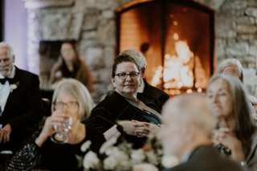
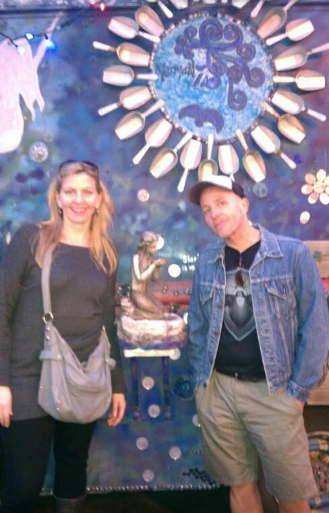
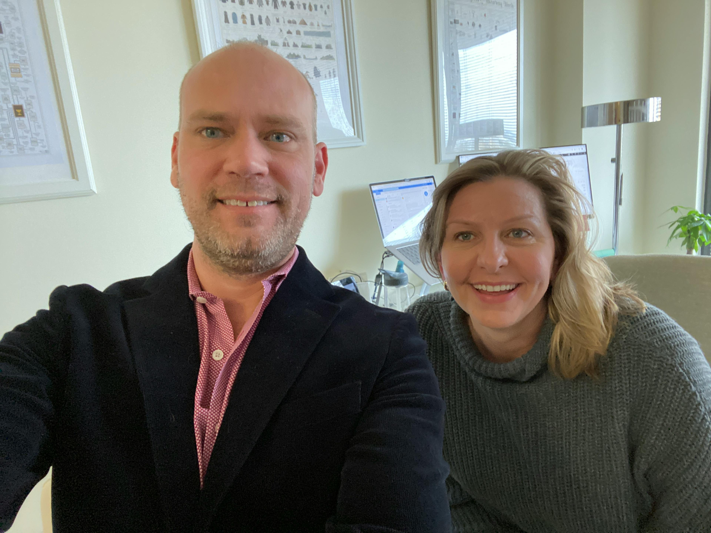
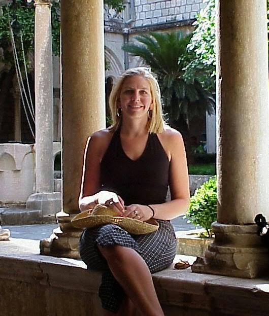

One of the things I will always remember about Stef was how she was there to offer support and guidance. She pushed us to grow, while making sure we knew we weren’t doing it alone.

About Stefanie
She welcomed you in.
Then she kept you.
Stef had a way of making people feel that they belonged. You didn't stay a guest for long. You became part of her family, and somehow it felt like you had always been there.
She was honest. She saw our quirks, made fun of them, loved us for them, and recognized that they were often the very same quirks she carried herself.
And she paid attention. She would leave a book on your desk because she thought you would love it. She would bring you a drink or some food because she knew exactly what would make you happy.
“You became part of her family.
You were a lifetime family member.”
The Stef effect
You became one of her people.
Stef had a way of making you feel like you belonged. Not through grand gestures, but through attention. She remembered what you liked. She noticed what you were curious about. She'd leave a book on your desk because she thought you'd enjoy it, or bring you a drink or something to eat because she knew it would make you happy.
And food was part of that connection. She loved to talk about food with you, try something new, hear what you'd discovered, and think about what you should eat next. Polish traditions like pierogi and those special cookies carried the same message she gave people in so many other ways: you are welcome here, sit down, eat something, stay awhile.
“I love me some good soup.”
A very Stefanie kind of thing
Good food.
Good conversation.
People she loved.
She was honest enough to tell you the truth, funny enough to make fun of your quirks, and loving enough to recognize that they were often the same quirks she had herself.
You didn't just know Stef.
You became family.
In her own words
The questions she asked.
The way she showed up.
“At the end of the day, if we don’t fill their needs, it won’t matter how hard we worked to do it.
“How can I support you?
Leave her a note
Choose what you'd like
to share.
Whether you're joining us on October 3 or remembering her from somewhere far away, leave something behind.
Memory wall
Memories from everywhere.
A collection of stories, photographs, tiny details, and the things only the people who loved her would remember.
Stef gave us permission to be the complex humans that we are. She made room for all of it, and somehow made you feel better for being exactly who you were.
I met Stef the very first time in June/July of 2019 in Raleigh. We were having a great time dealing with one of our early investors that had just returned from a Microsoft Meeting and didn’t like our purpose in soil data. He could not see the need or possibility for farmers.
Stef was extremely cool under fire, when I was ready to light this investor on fire. What I did not realize is that her coolness and counsel to the emotional me would become a way of life over the next seven years.
In good times and bad, Stef, “my personal counselor in chief,” helped me see better ways to work and always gave me a sincere challenge to do better.
I will always remember Stef putting people first, no matter what was going on behind the scenes. That was simply how she moved through the world.
I remember how fiercely Stef fought for the things she believed in, and never quietly. She was open and transparent about her commitments, and gave her all in action and word to help things move in a direction she believed in. She was never afraid to fight for those in need.
What I also loved about Stef was that while she knew many things in life were serious and should be treated that way, she still found time to have fun and enjoy the talents and company of others. She knew that people are what matter when it is all said and done.
“There is no ceiling on kindness.”
She was honest enough to tell you the truth, kind enough to stay beside you while you heard it, and funny enough to make you laugh about your own ridiculousness.

She'd leave a book on your desk because she thought you'd enjoy it. Or show up with a drink. Or food. She remembered.
A few more Stef moments
The people.
The moments. The life.
A few more glimpses of Stef, tucked into the story where her people can keep adding to it.



Her people, everywhere
Different places.
Same love.
She had a remarkable talent for making a room feel smaller. Seattle, Great Falls, a workplace, a kitchen table, a quick stop with a friend. Wherever she was, there was room for one more person.
“You were never just someone she knew.
You were one of her people.”
Keep adding to it
The story doesn't end
with the service.
Come back later. Add another story. Read someone else's. Send this page to someone who knew her.
Leave another memory ↑